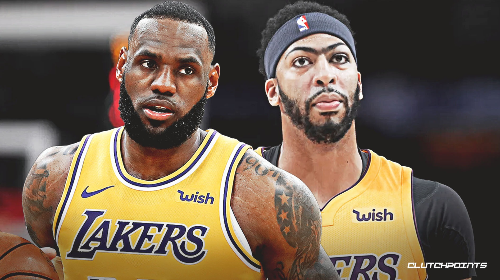
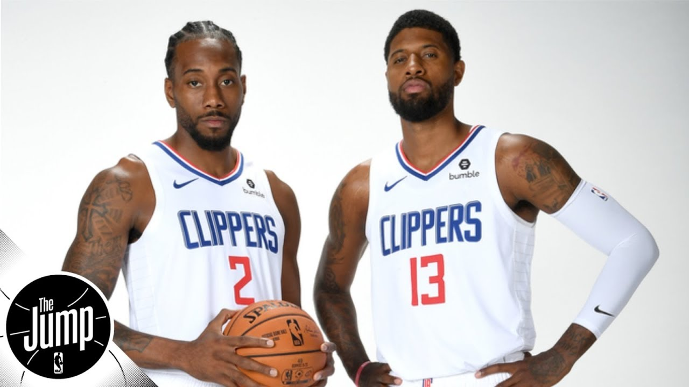
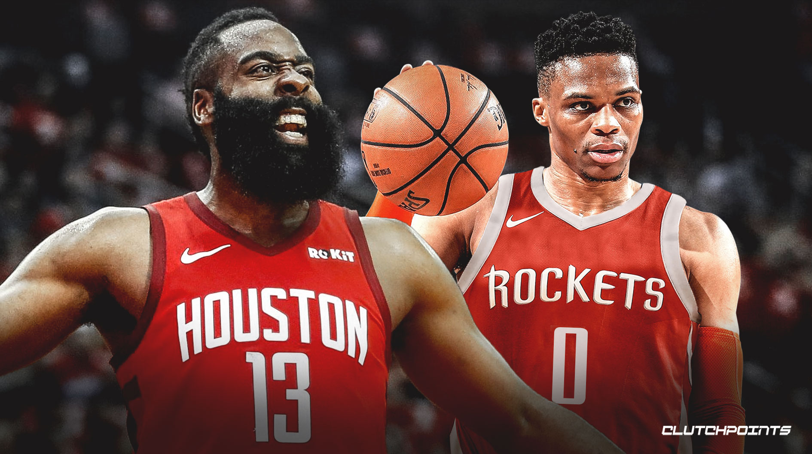
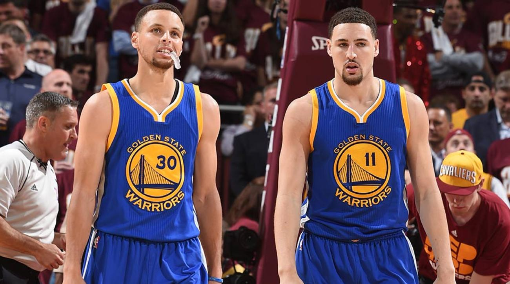
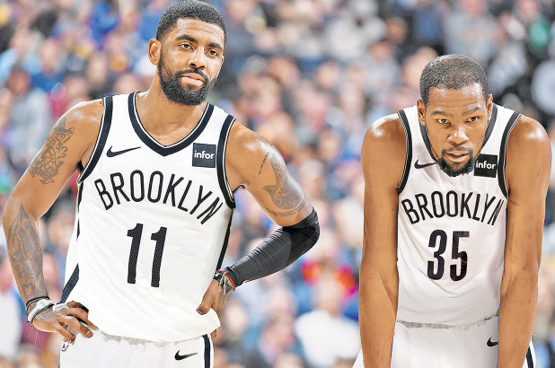

They are on the Los Angeles Lakers. Their "Combined 2018-2019 statistics: 53.3 ppg, 12.2 apg, 20.5 rpg, 38.5 PIE." Lebron is the automatic ticket to the NBA finals. Lebron is automatically a beast when he plays, and having Anthony Davis by his side they are unstoppable. Anthony Davis is a monster in the paint, and he has automatic points in the mid- range. Davis’ three-point percentage hit a career high 34% in 2017. Having Lebron and Anthony Davis on the court is un-stoppable. They will be the NBA finals 2020 Champions in my prediction.

They are on the Los Angeles Clippers. Their "Combined 2018-2019 statistics: 54.6 ppg, 7.4 apg, 15.5 rpg, 33.3 PIE." Kawhi is on of the best defender in the NBA and having Paul George on his team, they are going to average 60 points together. Both players are coming off MVP caliber seasons and one off a championship. Paul George and Kawhi Leonard are good on both sides of the court defense and offense. Kawhi played with Kyle Lowry and Siakam and won a championship, now who knows what those two will do.

They are on Houston Rockets. Their "Combined 2018-2019 statistics: 59 ppg, 18.2 apg, 17.7 rpg, 36.5 PIE." They are former MVPs and teammates; Westbrook and Harden are bound to make Houston a dominating force in the West. The only interesting thing is that both Harden and Westbrook are dominant ball players, and how are they going to share the ball. Both players are team leaders and can score and pass efficiently. Their last year statistics are very scary too.

They are on Golden State Warriors. Their "Combined 2018-2019 statistics: 48.8 ppg, 7.6 apg, 9.1 rpg, 25.5 PIE." They were the team that went to the finals with a 73-9 regular season. Both won in the finals as well. Klay and Curry are 2 best shooters and they have a chance to go to the finals. Even though Klay has an injured ACL, they still might have a chance to make it to the finals.

They are on the Brooklyn Nets. Their "Combined 2018-2019 statistics: 49.8 ppg, 12.8 apg, 11.4 rpg, 31.9 PIE." They both are really good players and good leaders. For 2020 they are number 5 because Kevin Durant has suffered from an injury that is damaging to an athlete's career. He suffered from a Achilles injury. If both the players are healthy, they are a matchup nightmare. When Kevin Durant heels up and all healthy, he is un-stoppable along with Kyrie in 2021.
Validator